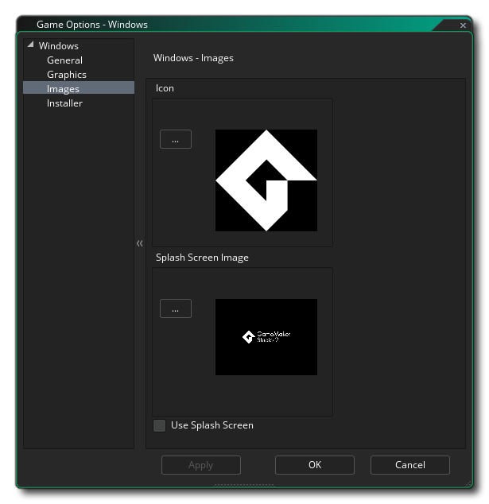

Esta sección describe las diferentes opciones disponibles para usted que controlan cómo se compilarán sus proyectos de juegos de Windows. Las diferentes secciones son:
La página General para juegos de Windows es donde debe proporcionar la información necesaria para que Windows se muestre cuando su juego se haya instalado y se esté ejecutando. Esta información se encuentra en la sección Información del producto y se debe completar por completo.
La sección de Opciones de esta ventana te permite elegir dónde se instalará el paquete del juego, ya sea " %localappdata% "o" %appdata% ", así como si se debe establecer Copiar exe en la carpeta de salida. En general, nunca debería necesitar esta opción, pero se proporciona para aquellos usuarios que tienen varios archivos DLL que se comunican entre sí y con su juego, y cuando esté habilitado, mantendrá el EXE del juego en la carpeta de salida al probar, en lugar de colocarlo en la carpeta Temp.
A continuación, puede establecer el margen de suspensión de Windows. Esta opción está relacionada con la reducción del tartamudeo al ejecutar tu juego en sistemas específicos. Básicamente, si su juego se ejecuta más rápido que la velocidad de su sala, GameMaker Studio 2 se "suspenderá" durante el tiempo restante, pero este modo de espera puede ser bastante impreciso y, a menudo, puede dejar de dormir más tiempo de lo necesario, lo que hace que su marco se demore más. causa el tartamudeo. Para solucionar esto, podemos dormir por menos tiempo, y luego sentarnos en un bucle estrecho durante el resto del tiempo para hacerlo más preciso, aunque el problema de estar en un bucle es que aumenta el uso de la CPU, lo que a su vez puede haz que la temperatura de tu CPU aumente y tu ventilador funcione más rápido. De forma predeterminada, este valor se establece en 10, y en el 99,99% de los casos no tendrá problemas con esto, pero para máquinas de gama baja o para máquinas con muchos procesos en segundo plano que se ejecutan, esta puede no ser una solución ideal (o para máquinas de muy alto nivel también) y se puede requerir un valor de 1 o 15 o algo. Sin embargo, tenga en cuenta que esto es en gran medida una configuración específica del sistema y que lo que funciona en su máquina de compilación puede no ser apropiado para otro usuario, y por lo tanto, en caso de duda, deje la configuración en 10.
La opción final es habilitar Steam para tu juego. Si habilitas esta opción, asegúrate de tener el SDK de Steam works instalado (ver aquí ), y de haber agregado la ID de la aplicación Steam en las Opciones generales para el juego.
Las opciones de gráficos son aquellas que debe configurar para determinar cómo usará su juego la tarjeta gráfica de su PC con Windows. Se incluyen las siguientes opciones para que las modifique:
- Mostrar Cursor: cuando se marca esta opción, se mostrará el cursor normal de Windows, y si lo desactivas, significa que no se muestra ningún cursor a menos que hayas creado uno en tu código de juego. Esto está predeterminado.
- Iniciar pantalla completa: si esta opción está activada, el juego comenzará en modo de pantalla completa; de lo contrario, se abrirá la ventana. Esto está desactivada por defecto.
- Permitir el cambio a pantalla completa: con esta opción marcada, el usuario puede cambiar de pantalla completa a ventana y viceversa utilizando los accesos directos estándar de Windows. Esto está desactivada por defecto.
- Interpolar colores entre píxeles: activa la interpolación, que básicamente "suaviza" los píxeles. Para gráficos de píxeles nítidos, debería estar desactivado, pero si tiene buenas combinaciones alfa y gráficos de bordes suavizados, es mejor dejarlo encendido. Esto está activado de manera predeterminada.
- Use la sincronización para evitar que se rasgue: Esto activa y desactiva v-sync (v-sync se usa para sincronizar la velocidad de actualización de su juego con la frecuencia de actualización del monitor). Tenga en cuenta que si tiene un juego con una velocidad de sala de 120 y el jugador tiene un monitor con una frecuencia de actualización de 60, activar esta opción también bloqueará la velocidad de su juego a 60. Esto está desactivada por defecto.
- Permitir el cambio de tamaño de la ventana: Marcar esto permite al usuario cambiar el tamaño de la ventana del juego (la opción de la ventana sin bordes debe estar desactivada para que esto funcione). Esta opción está apagada por defecto.
- Ventana sin bordes: Al marcar esto, su juego se ejecutará con una ventana sin bordes, eliminando los botones normales de minimizar, maximizar y cerrar, así como el título del juego. Esto está desactivada por defecto.
- Escalado: aquí puede elegir mantener la relación de aspecto (por lo tanto, una habitación de 4: 3 se "encajonará" en una 16: 9) o escalar completamente (estirando la imagen para que se ajuste a la pantalla completa).
¡ADVERTENCIA! Apagar la superficie de la aplicación deshabilitará todas las opciones de escala establecido en las Opciones de juego de Windows hasta que se vuelva a encender. Ver la superficie de aplicación para más detalles.Finalmente, existe la opción de establecer el tamaño de la página de textura. El tamaño predeterminado (y el más compatible) es 2048x2048, ¡pero puedes elegir desde 256x256 hasta 8192x8192! También hay un botón marcado Ver que generará las páginas de textura para esta plataforma y luego abrirá una ventana para que pueda ver cómo se ven. Esto puede ser muy útil si desea ver cómo están estructuradas las páginas de textura y evitar tener páginas de textura más grandes (o más pequeñas) de lo necesario.
NOTA: tenga en cuenta que cuanto mayor sea el tamaño de la página de texturas, menos compatible será su juego en PC con especificaciones más bajas.

La sección de imágenes es donde suministras las imágenes que tu juego requiere. Para Windows, debe proporcionar un archivo de icono (que debe estar en .ico Formato) y también una pantalla de inicio (que puede ser .png, .bmp, .jpg o .gif formato). La pantalla de presentación se mostrará mientras se carga el juego, y se puede habilitar o deshabilitar marcando la opción Usar pantalla de presentación (que está desactivada de manera predeterminada).
Vale la pena señalar que GameMaker Studio 2 tiene una herramienta Project Image Generator que se puede utilizar para crear automáticamente todas las imágenes necesarias para todas las diferentes plataformas de destino en las que se está compilando el juego. Si utiliza esta herramienta, debe revisar las imágenes creadas para asegurarse de que sean lo que necesita.
Los juegos de Windows se pueden crear con un instalador y aquí puede definir las distintas configuraciones y gráficos que GameMaker Studio 2 usará cuando los cree. En primer lugar, tenemos las opciones gráficas que definirán el aspecto del propio instalador:
- Finalizado: el gráfico que aparece en la página "Finalizado" del instalador. Debe estar en formato *.bmp y medir 164x314px.
- Encabezado: el gráfico que aparece mientras se ejecuta el instalador. Debe estar en formato *.bmp y medir 150x57px.
También puede apuntar a un archivo de Acuerdo de Licencia específico (se proporciona un ejemplo con GameMaker Studio 2 ) y un archivo de script NSI personalizado ( aquí encontrará detalles) si necesita uno, o haga clic en los botones correspondientes para volver a los archivos predeterminados que se suministran con GameMaker Studio 2.